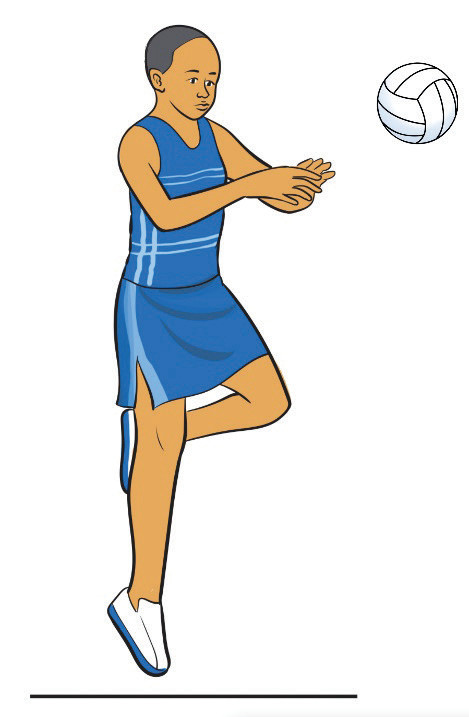
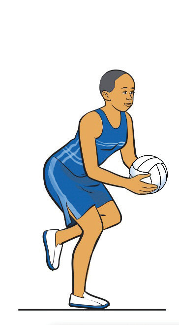

One-foot landing
One-foot landing occurs when a player catches the ball while moving and lands with one foot. The first foot to touch the ground is called the landing foot, while the second foot is the pivoting foot, the later can be used to step in any direction before passing or shooting, and allows for quick decision-making on the court. To practice one-foot landing, follow these key steps:
- (i)Focus on the ball and anticipate the landing while in motion;
- (ii)Land with one foot first to absorb impact and maintain control, as shown in Figure 1.14;
- (iii)Keep your knees slightly bent to ensure stability and balance;
- (iv)Use the second foot as a pivot to change direction for passing or shooting; and
- (v)Ensure quick ball distribution to keep the game flowing effectively.

a
bFigure 1.14: One-foot landing execution
Two-foot landing
A two-foot landing occurs when a player catches the ball and lands on both feet simultaneously. This technique provides greater balance and stability, allowing the player to decide which foot to use as the pivot foot before passing or shooting. It is especially useful when receiving the ball under defensive pressure. To practice two-foot landing, follow these key steps:
- (i)Keep your eyes on the ball and anticipate the landing while in motion;
- (ii)Land with both feet at the same time to evenly distribute weight and maintain control;
- (iii)Keep your knees slightly bent to absorb impact and ensure stability, as shown in Figure 1.15;